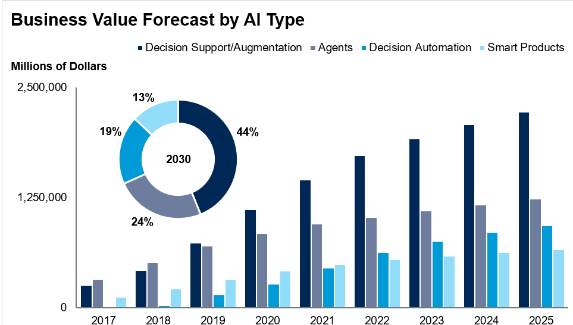

The future
Links:
(1)Security Strengthened:
The future might see a surge in drone usage. Not to get alarmed! I am talking about the drones used near the Eiffel Tower or Statue of Liberty instead of the ones in the military. A few e-commerce companies are planning to have the products and items delivered to their customers with the use of drone technology. Because drones are capable of flying, they are less likely to get stuck during road construction or a traffic jam. That way you’ll have instruments to routinely check the regions that you might not be able to go is a safer way to get things delivered. This network of autonomous drones flying around and taking care of things will strengthen the future vision of many of us. Its idiosyncrasies will be almost similar to the start of the mobile phone revolution in the 1990s.
(2)AI Analysis for Business Forecasts:
ML-based time series analysis is a hot AI trend in 2020. This technique collectively analyzes a series of data over time. When used correctly, it aggregates data and analyzes it in such a way that allows managers to easily make decisions based on their data.
Using an ML network to process the complex calculations required to apply statistical models to your business’s structured data is a major improvement over traditional methods. This ML-boosted analysis offers high-accuracy forecasts that are 90-95% accurate. When the AI network you’re using is properly trained, it can capture features of your business, such as seasonality and cross-correlation in demand forecasting for retail.
In 2020 we’ll see a growing trend for applying recurrent neural networks for time series analysis and forecasting. Recurrent neural networks, which are an application of deep learning, are one reason we believe that deep learning will end up replacing traditional machine learning. For example, deep learning can forecast data, such as future exchange rates for currency with a surprisingly high degree of accuracy.
The research into time series classification has made substantial progress in recent years. The problem being solved is complex, offering both high dimensionality and large numbers. So far, no industry applications have been achieved. However, this is set to change as the research into this field has produced many promising results.
Another type of artificial intelligence that has been recently developed is the convolutional neural network (CNN). This type of ML network discovers and extracts the internal structure that is required to generate input data for time series analysis.
Along with forecasting the future, there’s another technology that could be widely applied: anomaly detection based on autoencoders that run artificial neural networks using unsupervised learning algorithms. These systems are capable of capturing common patterns while ignoring “noise.” Encoded feature vectors allow businesses to separate anomalies, such as financial, political, and even social data.
(3)Reinforcement Learning:
Support learning (RL) is prompting something important in 2020. RL is a specific utilization of profound discovering that utilizes its own encounters to develop itself, and it's compelling to the point that it might be the eventual fate of AI.
With regards to fortification learning AI, the calculation learns by doing. At first, activities are attempted aimlessly, however in the end, this turns into a coherent procedure as it endeavors to accomplish explicit objectives. The administrator remunerates or rebuffs these activities, and the outcomes are taken care of go into the system to "educate" the AI.
No predefined recommendations are given to the fortification learning specialist. Rather, the AI begins by acting totally haphazardly, and in the long run figures out how to expand its prize through reiteration. Support learning permits the calculation to create refined techniques.
Fortification learning is the most ideal approach to reproduce human imagination in a machine by running numerous potential situations. The model can even be adjusted to finish complex conduct errands. It's a perfect answer for tackling a wide range of advancement issues.
Self-improving chatbots are one case of fortification learning's impact. An objective situated chatbot is one that is intended to enable a client to take care of a particular issue, for example, making an arrangement or booking a pass to an occasion. A chatbot can be prepared utilizing fortification learning through experimentation to turn into a completely practical mechanized associate to clients.
(4)Conversational AI:

Throughout 2019 and 2020, artificial intelligence has developed to a point where it can now compete with the human brain when it comes to everyday tasks, such as writing. Researchers at OpenAI claim that their AI-based text generator is able to generate realistic stories, poems, and articles. Their GPT-2 network was trained using a large writing data set and can adapt to different writing styles on demand.
Bidirectional Encoder Representations from Transformers (BERT) is another significant outcome in the AI field. This is another text AI that is designed to pre-train models using given text. The major advancement is how BERT processes text.
Unlike previous approaches, which read the text either from left to right or right to left, but never both, BERT brings a language model that allows for bidirectional training. BERT has a deeper understanding of language than any network that came before it and uses several types of preceding architecture to generate accurate predictions for text.
The better the computer understands text that is fed into it, the higher-quality the machine’s responses will be. BERT is a step closer to an AI that is able to accurately understand and answer questions that are fed into it, just like a human could.
XLNet is an autoregressive pre-training model that’s able to predict words from a set of text using context clues. Despite being only a simple feed-forward algorithm, it has managed to outperform BERT in many NLP tasks.One clear application is voice-enabled AI. Voice activation and voice commands all function on the basis of the computer understanding the voice-to-text transcript of the spoken command. The better the computer can understand the text, the more accurately it can perform spoken commands as well.
With over 110 million virtual assistant users in the USA alone, there is a massive market for improving voice recognition. Today, voice-enabled devices, such as the Amazon Echo and Google Home, are common in homes. Any improvement to the voice assistant technology will lead to an increase in business in this sector, and ML is the quickest path to achieving these improvements.
(5)Convergence of IoT and AI:
Industrial IoT processes are generally not as efficient as they could be. This leaves plenty of room for AI algorithms to help increase efficiency and reduce downtime for various businesses through methods such as predictive maintenance or defect detection. Overall, the addition of AI to a manufacturing process can only increase its efficiency.
The current IoT trends reveal that businesses are accepting the potential of ML. Rolls Royce partnered with Azure IoT Solutions to use the cloud and IoT devices to their advantage. The power of predictive maintenance shouldn’t be underestimated, and Rolls Royce is taking advantage of their IoT devices to check the health of their aircraft engines to keep their uptime at a maximum.
Another company that has jumped onto the IoT-AI bandwagon is Hershey. In Hershey’s production facilities, even a 1% variance in weight can cost a lot. Using Microsoft Azure machine learning network, Hershey was able to significantly reduce the variability of their product weight, resulting in major savings.
One important machine learning option to improve the IoT software development process is knowledge distillation.In this type of learning, ML network learns how to produce desired results through techniques such as reinforcement learning. Then, a small ML network is trained to produce identical results to the large ML network. The point of knowledge distillation is model compression. This smaller ML network is easier to run on less powerful devices, such as IoT sensors and other mobile devices. With knowledge distillation, it’s possible to decrease an ML model’s weight on a given device by up to 2000%, saving both on energy and hardware budget.
An example of knowledge distillation is a video surveillance system that needs to detect the genders of people on camera in real-time. Detecting a person’s gender takes a large neural network, which is best run on the cloud. However, for real-time detection, you can’t always rely on the cloud. By distilling the larger network’s knowledge into the smaller one the same gender detection task can be performed by a network small enough to fit onto a small mobile or edge device, resulting in large savings.
(6)Human and AI cooperation:
Many people see artificial intelligence and automation within the enterprise as job killers. The emerging hybrid human and robotic workforce is alive and growing. Organizations are swiftly implementing cognitive AI and RPA that can handle high volume repetitive tasks at scale. As more and more use cases emerge the hybrid workforce grows.
Getting buy in might be difficult but business leaders should be open and honest with employees giving them transparency into how AI will be used and what will be the lasting impact on current human workers and their daily work lives
Overall whether your organization works to gain buy in or not, the message is kind of clear Get used to it. In a not so distant future, you will probably be working alongside AI-powered tools, digital workers, and bots in your day to day work. The hope is that these digital workers are aligned with the business and help to solve problems that accelerate your time to value.The normalcy of AI in the workplace will also be the reason we see more human interaction with AI. We will be expected to live and work alongside AI as we already live with Alexa, Siri, and other digital assistants. What will your intelligent digital worker’s name be?
As technology capability improves, regulation permits and social acceptance grows, more AI will be deployed in uncontrolled public spaces. I imagine more of us will interact with AI, maybe without even knowing it. While we have come to understand that customer experiences are often improved and customized based on our personal profiles and interest, I expect many other forms of interaction with AI, even where we don’t see it happening.